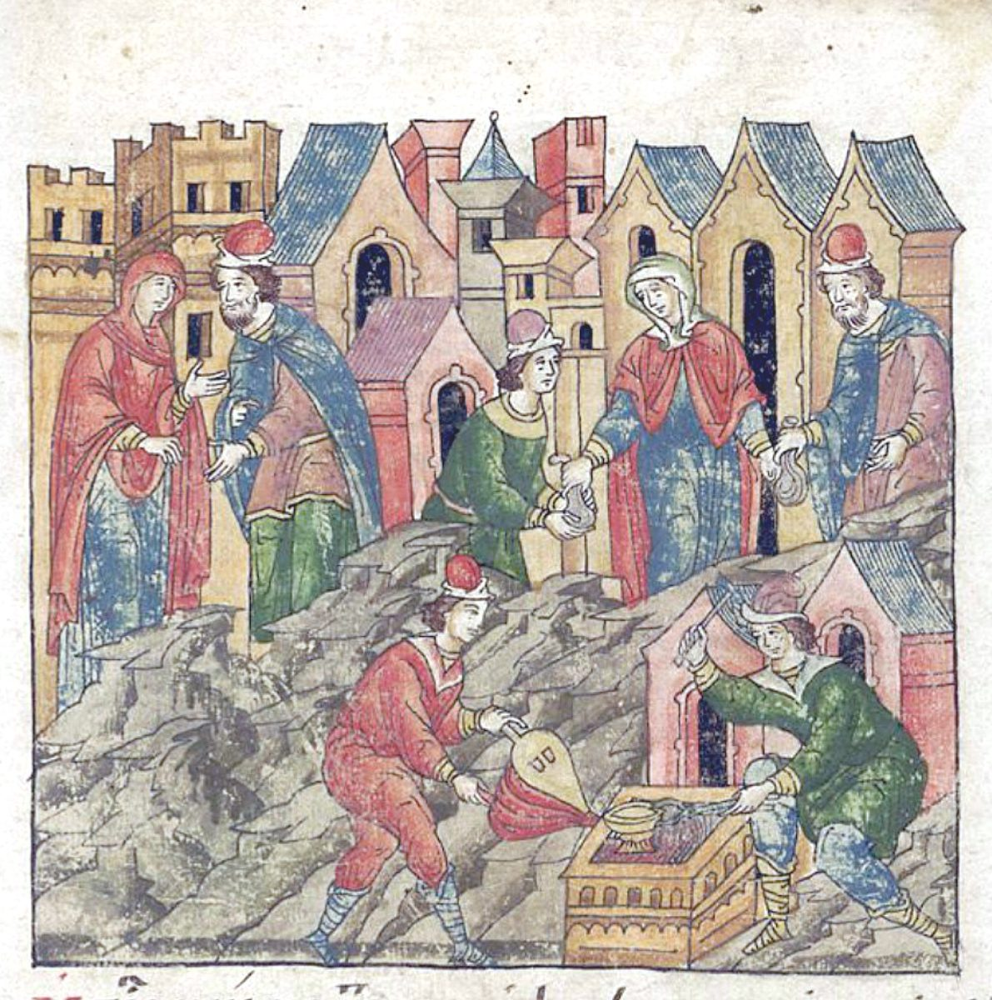

Judges 17 — The Mister Translation

The illuminators read verses 2–4 as a chain of hands: the son and his mother talk, the bag of silver is handed back, and the mother passes it on to the craftsman. Below, the silver is melted down at a furnace with bellows — the “cast” half of the “carved and cast image”; the verse itself says only that the silversmith “made it”.

Translator's Notes — verse by verse
“Who is like Jehovah?” The man’s name in verses 1 and 4 is Mikhayehu, “Who is like Jehovah?”, with the divine name at its end; from verse 5 on the chapter calls him by the short form, Mikhah, Micah. This translation keeps the difference as “Micayehu” and “Micah”. The long form stands in twenty-one verses of the Hebrew Bible; two are here, and seventeen of the others belong to Micaiah son of Imlah, the prophet who stood alone before Ahab (1 Kings 22 and 2 Chronicles 18). He is not the prophet Micah of Moresheth. The KJV, the ASV and the NWT 1984 print “Micah” in both places. A man named “Who is like Jehovah?” is about to make an image.
A curse in his ears. The silver was “taken”, and his mother “uttered a curse” over it: alit, the verb of alah, the oath-curse. Leviticus makes that curse a summons: a man who “hears a public call to testify”, qol alah, and knows the matter but stays silent “shall bear his guilt” (Leviticus 5:1, now on these pages). Micah heard it “in my ears”, and confesses. The written Hebrew has ve-atti, an old spelling of the feminine “and you”, which the margin reads ve-at; the B Greek text has “and you cursed me”. His mother answers with a blessing to cover the curse: “Blessed be my son by Jehovah!” The NWT 1984 has “over which you pronounced a curse and also said it in my hearing”, the Douay “concerning which thou didst swear in my hearing”, and the ASV “Blessed be my son of Jehovah”.
A carved and cast image. “I have solemnly dedicated the silver to Jehovah”: hakdesh hikdashti, the verb doubled. What she dedicates it to is pesel u-massekhah, “a carved and cast image”. The pair stands in five verses of the Hebrew Bible, and the first is a curse: “Cursed is the man who makes a carved and cast image, an abomination to Jehovah … and sets it up in secret” (Deuteronomy 27:15, now on these pages). The others are verses 3 and 4 here, Judges 18:14 (now on these pages), and Nahum 1:14, where Jehovah will cut off “the carved image and the cast idol” from “the house of your gods” (Nahum 1:14, now on these pages). The KJV has “I had wholly dedicated the silver”, and “to make a graven image and a molten image”; the NWT 1984 has “a carved image and a molten statue”.
Two hundred of eleven hundred. The eleven hundred pieces of silver are the sum each Philistine lord promised Delilah (Judges 16:5, now on these pages); the book does not join the two stories, and does not say what became of the other nine hundred. Only two hundred go to the silversmith. The A Greek text has her dedicate it “from my hand alone”, where the Hebrew has “from my hand, for my son”. Josephus tells the Danites’ move north in a few lines and leaves Micah, his silver and his priest out of it (Antiquities 5.177–178, numbered 5.3.1 in Whiston).
A house of God, or of gods. Beit elohim can be “a house of God” or “a house of gods”, and the verse has no verb to settle it. The ASV and the NWT 1984 have “a house of gods”, the KJV “an house of gods”, the NIV “a shrine”; both Greek texts have oikos theou, “a house of God”, and so does this translation. They are the words Jacob spoke at Bethel, “This is none other than the house of God” (Genesis 28:17, now on these pages).
Ephod and teraphim. An ephod is what Gideon made of the Midianite gold, and “all Israel went astray after it” (Judges 8:27, now on these pages). Teraphim are household gods, the ones Rachel stole from her father (Genesis 31:19, now on these pages). The Douay explains them both: “theraphim, that is to say, a priestly garment, and idols”.
“Filled the hand.” Micah “filled the hand of one of his sons”: mille et-yad, the idiom of Aaron’s ordination, “anoint them, and fill their hand, and sanctify them” (Exodus 28:41, now on these pages). Here it is done by a householder in Ephraim for his own son. The NWT 1984 keeps the idiom, “to fill the hand of one of his sons with power”; the KJV and the ASV have “consecrated one of his sons”.
No king. “There was no king in Israel” stands in three verses of the Hebrew Bible, all in the last five chapters of Judges: here, Judges 18:1 (now on these pages) and Judges 21:25 (now on these pages), and 19:1 says it again with the words in another order (now on these pages). The stories of Micah, of the Danites, and of the Levite’s concubine are all told under it.
“Right in his own eyes.” The words ha-yashar be-einav stand in four verses of the Hebrew Bible. At Marah they are Jehovah’s, “do what is right in his eyes” (Exodus 15:26, now on these pages); in Deuteronomy they are forbidden, “You shall not do according to all that we are doing here today — each man whatever is right in his own eyes” (Deuteronomy 12:8, now on these pages); and in Judges they are the summary, here and at 21:25. Samson chose his wife the same way: “she is right in my eyes” (Judges 14:3, now on these pages). The ASV has “every man did that which was right in his own eyes”; the NIV “everyone did as they saw fit”; the Douay “every one did that which seemed right to himself”. The A Greek text has “the good in his own eyes”, the B text “the right”.
A Levite of Judah. The young man is “from Bethlehem in Judah, of the clan of Judah”, and “he was a Levite”. Levites had no tribal land, and Bethlehem is not among the cities given them in Joshua 21 (now on these pages). The words may mean that he lived among Judah’s clans, or that his family was counted with Judah; the chapter does not say, and the B Greek text does not have “of the clan of Judah”. The KJV and the ASV have “of the family of Judah”; the NIV “who had been living within the clan of Judah”.
“Sojourning there.” Gar sham, “he sojourned there”: the verb gur, the resident stranger’s, stands three times in verses 7–9. The law already had a place for such a man: “if the Levite comes from one of your gates, out of all Israel where he sojourns”, he is to come “to the place that Jehovah chooses” and serve there (Deuteronomy 18:6, now on these pages). This one goes “wherever he can find a place”, and finds a private house. The NWT 1984 has “he was residing there for a time”.
Father, priest, and a wage. Micah asks him to be “a father and a priest to me”. The words “a father and a priest” stand in two verses of the Hebrew Bible: here, and when the Danites make the same offer to the same man (Judges 18:19, now on these pages). The pay is ten pieces of silver a year, a set of clothes and his keep; the mother spent two hundred on the image. The verse ends “and the Levite went”, with no word for where; the KJV and the ASV add “in”, “So the Levite went in”, and the Douay ends the verse at “a double suit of apparel, and thy victuals”, with no going at all.
Moses’ words. “The Levite was willing to dwell with the man.” The words vayo’el … lashevet et ha-ish stand in two verses of the Hebrew Bible: here, and Exodus 2:21 (now on these pages), “Moses was willing to dwell with the man”, the priest of Midian, who gave him his daughter. Her son was named Gershom, “for he said: I have been a resident alien in a foreign land” (Exodus 2:22), the ger of this Levite who was “sojourning there”. When the book names the priest of the Danites’ image, it names a Jonathan son of Gershom (Judges 18:30, now on these pages). The KJV and the ASV have “the Levite was content to dwell with the man”; both Greek texts have “began to sojourn with the man”.
A father’s son. The man asked to be “a father” to Micah becomes “like one of his sons”. Micah fills a hand a second time (vv. 5 and 12): first his son’s, now the Levite’s. The NWT 1984 has “Miʹcah filled the hand of the Levite with power”.
“Now I know.” The chapter ends on Micah’s confidence: “Now I know that Jehovah will do me good, because the Levite has become my priest.” The image, the ephod and the teraphim stay in his house, and he counts on a hired Levite to bring him Jehovah’s favour. The ASV has “Now know I that Jehovah will do me good, seeing I have a Levite to my priest”; the TLB “because now I have a genuine priest working for me!” The A Greek text puts it in the past, “has done me good”.
Patterns worth carrying forward
Where this translation keeps the words exact and distinct: “Micayehu” and “Micah” for the long and short forms of the name; “uttered a curse” for alit; “a carved and cast image” for pesel u-massekhah, as in Deuteronomy 27:15; “a house of God” for beit elohim; “filled the hand” for mille et-yad, as in Exodus 28:41; “right in his own eyes” for ha-yashar be-einav, as in Deuteronomy 12:8; “sojourn” for gur; and “was willing to dwell with the man” for vayo’el lashevet et ha-ish, as with Moses.
Echoes paid. The eleven hundred pieces of silver of Judges 16:5 are counted out again, and “each man did what was right in his own eyes” closes over Israel as Samson’s “she is right in my eyes” did over him at Judges 14:3. Gideon’s ephod at Judges 8:27 has a successor, Rachel’s teraphim at Genesis 31:19 come back, and the carved and cast image cursed at Deuteronomy 27:15 is made. Moses’ “willing to dwell with the man” at Exodus 2:21 is said of a young Levite.
Echoes planted. The carved and cast image comes back at Judges 18:14, “a father and a priest” at 18:19, the name Gershom at 18:30, and “There was no king in Israel” at 18:1, all now on these pages. The refrain returns again at 19:1, now on these pages, and at 21:25, with “right in his own eyes”; the long name Micayehu belongs again to Micaiah son of Imlah in 1 Kings 22. Neither of these last is translated here yet.
Next installment in this book: Judges 18 — the tribe of Dan, with no land of its own, sends five scouts north; they lodge at Micah’s house and know the Levite’s voice, then come back with six hundred armed men, carry off the image, the ephod, the teraphim and the priest, and burn Laish, a quiet and unsuspecting people, to build a city called Dan.